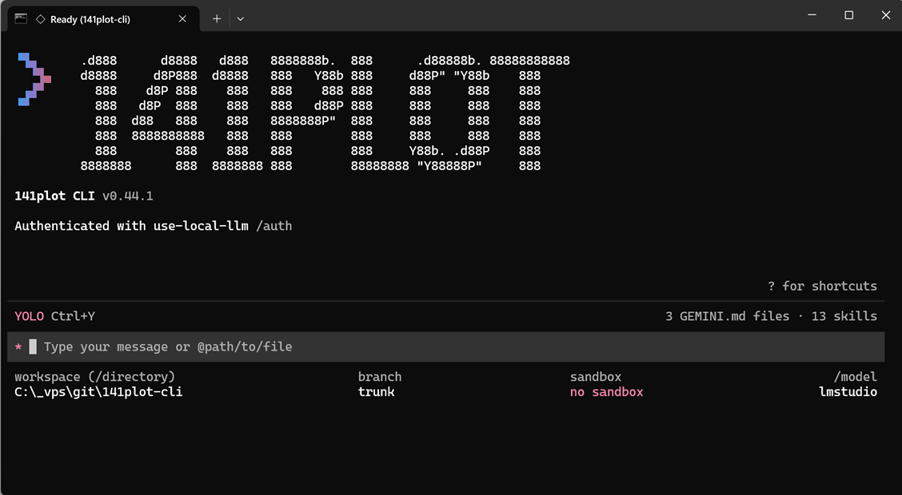
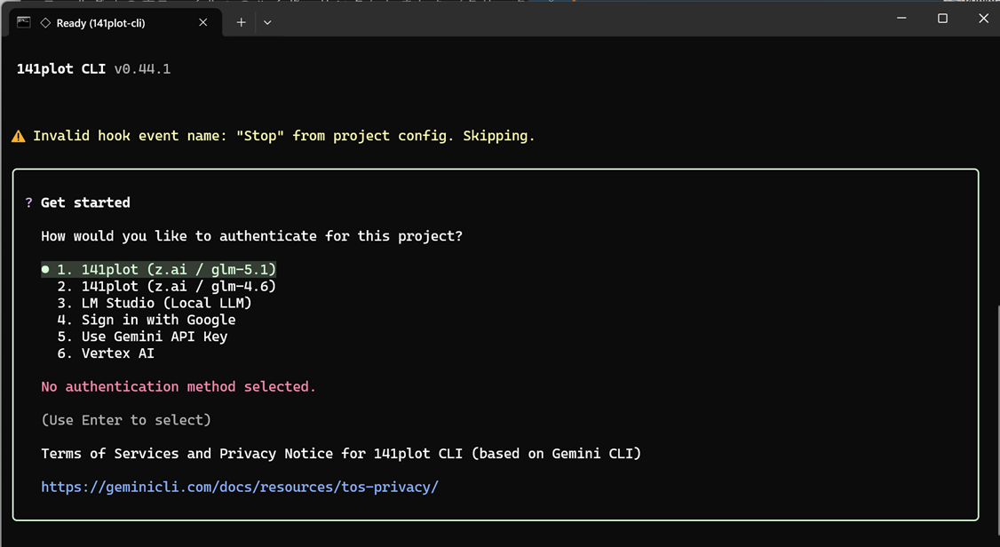

📊 SUMMARY
| 項目 | 内容 |
|---|---|
| 名称 | 141plot CLI（v0.44.1） |
| ベース | オープンソースの Gemini CLI |
| 開発目的 | AGENTS.md や settings.json の学習 |
| コンセプト | AI の汎用ワークフローを目指した |
| 対応 LLM | クラウド LLM もローカル LLM も自由に選択可能 |
🎯 開発の動機・目的
- AGENTS.md / settings.json の学習 - エージェントへの指示ファイルや設定ファイルが CLI 内部でどう読み込まれ、どう挙動に反映されるのかを、既製品を使うだけでなく「作る側」に回って理解する
- LLM 選択の自由の獲得 - 特定ベンダーに縛られず、クラウド LLM（z.ai / Google）もローカル LLM（LM Studio）も同じ操作感で切り替えられる環境を手に入れる
- AI の汎用ワークフロー化 - コーディング専用ではなく、資料作成・調査・自動化など日常のあらゆるタスクを 1 つの CLI で回せる汎用ワークフローを目指した
🖥️ スクリーンショット
オープニング画面

起動直後の画面。ASCII アートロゴと各種ステータスが表示される
- ASCII アートの「141plot」ロゴでオリジナルブランディング
- 認証状態（
Authenticated with use-local-llm /auth）を起動時に明示 - 読み込み済みコンテキストを常時表示（
3 GEMINI.md files · 13 skills） - フッターに workspace / branch / sandbox / model（
lmstudio）を常時表示し、今どの環境・どのモデルで動いているかが一目で分かる - YOLO モード（確認なしでツールを自動実行するモード）を
Ctrl+Yでトグル可能
LLM 選択画面

プロジェクトごとに認証方法（= 利用する LLM）を選択できる
- 141plot（z.ai / glm-5.1） - クラウド LLM（GLM 最新モデル）
- 141plot（z.ai / glm-4.6） - クラウド LLM（GLM 安定版）
- LM Studio（Local LLM） - ローカル LLM（OpenAI 互換 API 経由）
- Sign in with Google / Gemini API Key / Vertex AI - Gemini CLI 由来の Google 系認証 3 種
クラウド 5 系統＋ローカル 1 系統を同じメニューから選択でき、「クラウドもローカルも自由に選択可能」というコンセプトをそのまま UI に落とし込んでいる。
🔧 Gemini CLI からの主な改造点
1. 認証プロバイダの追加
- z.ai（glm-5.1 / glm-4.6）と LM Studio（ローカル LLM）を認証メニューに組み込み
- プロジェクト単位で認証方法を選択でき、クラウド／ローカルをシームレスに切り替え可能
- Gemini CLI 標準の Google 系認証（Google サインイン / Gemini API Key / Vertex AI）も維持
2. ブランディングの変更
- ASCII アートロゴ・名称（141plot CLI）を独自デザインに差し替え
- 起動画面・タイトルなど「自分のツール」としての見た目にカスタマイズ
3. skills / hooks 機構
- skills - 再利用可能なタスク手順を skill として登録し、必要なときに呼び出せる拡張機構（スクリーンショット時点で 13 skills を運用）
- hooks - プロジェクト設定（settings.json）からイベントに処理をフックできる機構。イベント名の検証（不正な hook はスキップして警告表示）も動作している
✨ できること
ベースの Gemini CLI が持つエージェント機能はそのまま利用できる。
- チャット機能 - ターミナル上での対話型セッション（REPL）
- コード生成・編集 - ファイルの読み書きツールによるコード作成・改修
- ファイル参照 -
@path/to/file指定でファイル・ディレクトリをコンテキストに追加 - シェルコマンド実行 - 承認付きツールでのコマンド実行（YOLO モードで自動承認も可）
- MCP 対応 - MCP サーバー経由での外部ツール統合
- メモリ機能 - GEMINI.md によるプロジェクトコンテキストの保持（複数ファイルの積層読み込み）
- 非対話モード - スクリプトからのワンショット実行
- カスタムスラッシュコマンド -
/auth/modelなど独自コマンドの定義・実行
🎓 学んだこと・まとめ
- AGENTS.md / settings.json といった設定ファイルは「読む」だけでは分からない読み込み順・適用範囲・検証挙動があり、CLI を自作（改造）することで仕組みを体感的に理解できた
- オープンソースの Gemini CLI は認証・プロバイダ層の見通しが良く、独自 LLM の組み込み学習の題材として優秀
- クラウド／ローカルを 1 つの CLI に統合したことで、コスト・機密性・性能に応じた使い分け（例: 機密コードはローカル、重い設計はクラウド）が日常ワークフローに組み込めた
※ ローカル LLM 側の環境構築は「【付録１】ローカルLLM環境構築」、プラン選定は「【付録２】本気で検証！AIプラン」を参照